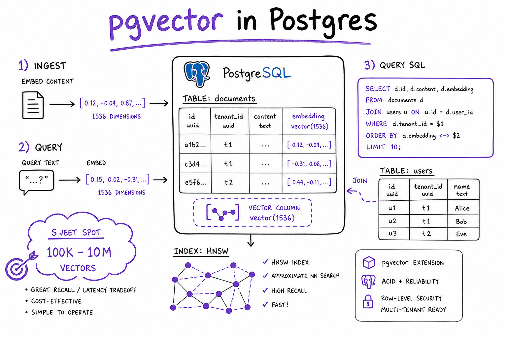
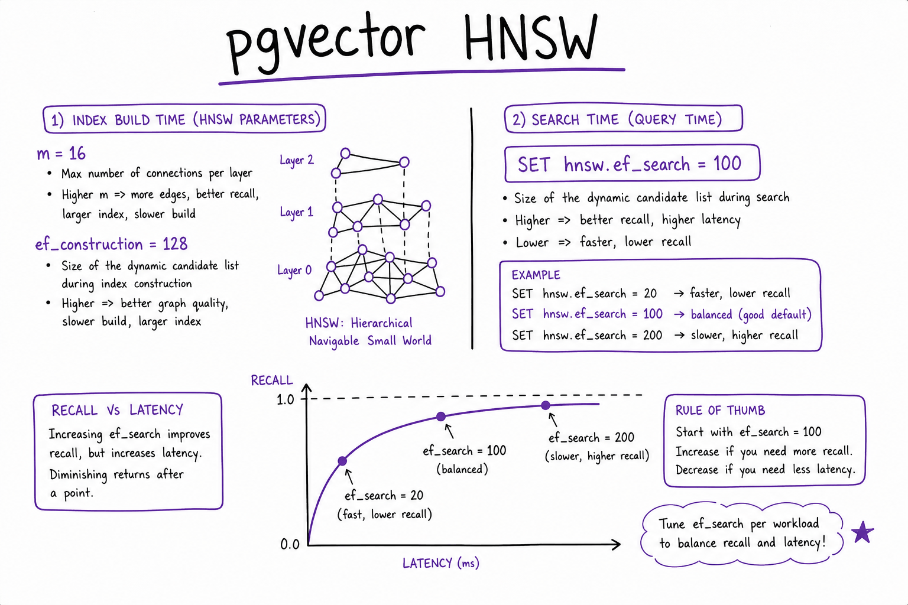
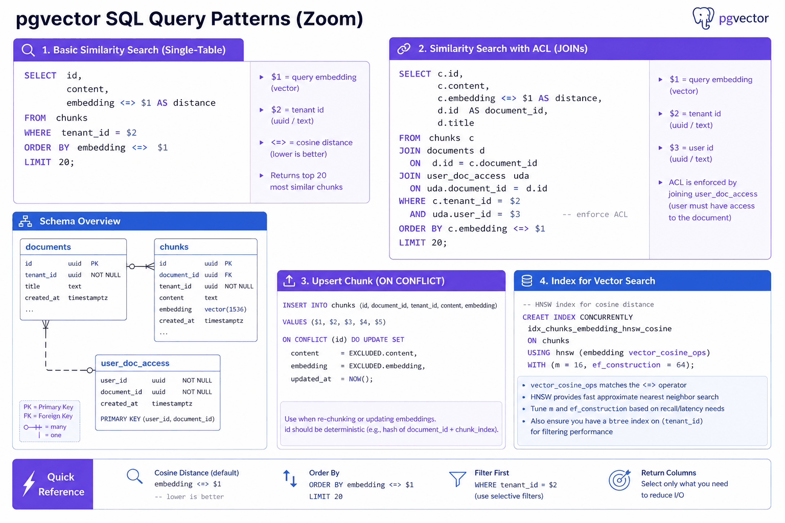

pgvector // Tech & tools
Vector search inside Postgres: HNSW/IVFFlat, hybrid with full-text, operations.
01 — At a glance
PostgreSQL extension for vector similarity search: store embeddings alongside relational data, HNSW/IVFFlat indexes, SQL WHERE filters, JOINs, and ACID transactions. The default when you already run Postgres. Compare with Pinecone, Weaviate, and Chroma in the Vector search & databases.

pgvector in Postgres: vector(1536) column, HNSW index, SQL WHERE tenant filter, JOIN with users/orders in one query. Sweet spot: 100K–10M vectors per instance with read replicas for search QPS.
Quick reference
02 — What & Why
pgvector adds a vector column type and distance operators to PostgreSQL. Instead of syncing embeddings to a separate vector SaaS, you store vectors in the same database as users, documents, permissions, and orders — with full SQL, transactions, and JOINs.
Functional requirements
- Store fixed-dimension embeddings in
vector(n)columns - Search by cosine, L2, or inner product distance
- Filter with standard SQL WHERE (tenant, ACL, date)
- JOIN embeddings with relational tables in one query
- Index with HNSW or IVFFlat for sub-linear ANN search
Non-functional requirements
- Latency: p99 < 50 ms for top-k=20 at 1–5M vectors with HNSW + tuned
ef_search - Consistency: ACID upserts — vector + metadata in same transaction
- Scale: ~1–10M vectors per instance (RAM-bound HNSW); read replicas for QPS
- Ops: Standard Postgres backup, replication, PgBouncer — team already knows this
Prerequisite: Vector search & databases and Choosing an embedding model metric choice — use vector_cosine_ops for OpenAI-style cosine embeddings.
03 — Core Concepts
| Term | Definition | Gotcha |
|---|---|---|
| vector(n) | Fixed-size float array column type. | Dimension n fixed; model change = new column/table. |
| <=> | Cosine distance operator. | Requires vector_cosine_ops index class. |
| <-> | L2 (Euclidean) distance. | Use vector_l2_ops if model uses L2. |
| <#> | Negative inner product. | For normalized vectors, equals cosine. |
| HNSW | Graph ANN index (PG 16+ native). | RAM hungry; tune m, ef_construction, ef_search. |
| IVFFlat | Cluster-based ANN; lower RAM. | Needs ANALYZE; tune lists and probes. |
| ef_search | Query-time HNSW beam width (session GUC). | Higher = better recall, slower queries. |
| Halfvec | FP16 vector type (pgvector 0.7+). | Half RAM; slight recall loss — test on golden set. |
04 — API / Interface Surface
Setup
CREATE EXTENSION vector;
CREATE TABLE document_chunks (
id BIGSERIAL PRIMARY KEY,
doc_id UUID NOT NULL,
tenant_id TEXT NOT NULL,
chunk_idx INT NOT NULL,
content TEXT NOT NULL,
embedding vector(1536) NOT NULL,
metadata JSONB DEFAULT '{}',
created_at TIMESTAMPTZ DEFAULT now(),
UNIQUE (doc_id, chunk_idx)
);
CREATE INDEX idx_chunks_tenant ON document_chunks (tenant_id);
CREATE INDEX idx_chunks_hnsw ON document_chunks
USING hnsw (embedding vector_cosine_ops)
WITH (m = 16, ef_construction = 128);
Query (retrieve)
SET hnsw.ef_search = 100;
SELECT id, content, metadata,
embedding <=> $1::vector AS distance
FROM document_chunks
WHERE tenant_id = $2
AND metadata->>'doc_type' IN ('policy', 'faq')
ORDER BY embedding <=> $1::vector
LIMIT 20;
Upsert (idempotent ingest)
INSERT INTO document_chunks (doc_id, tenant_id, chunk_idx, content, embedding, metadata) VALUES ($1, $2, $3, $4, $5::vector, $6) ON CONFLICT (doc_id, chunk_idx) DO UPDATE SET content = EXCLUDED.content, embedding = EXCLUDED.embedding, metadata = EXCLUDED.metadata;
05 — When to Use / When NOT
| Scenario | Use pgvector | Alternative |
|---|---|---|
| Already on Postgres | Yes — no new infra | Pinecone adds cost + sync |
| JOIN vectors with users/ACL | Yes — killer feature | Dual-write to vector SaaS |
| <10M vectors, moderate QPS | Yes + read replicas | Dedicated vector DB |
| 100M+ vectors, hyperscale QPS | Shard or migrate | Pinecone, Milvus |
| Native hybrid BM25+vector one call | Manual FTS + RRF | Weaviate |
| Local notebook / CI | Overkill | Chroma |
| Zero Postgres ops team | Risky | Managed Pinecone |
06 — Architecture
App ──write──► Postgres Primary (chunks + users + orders)
App ──search──► Postgres Read Replica(s)
├── B-tree: tenant_id, doc_id
└── HNSW: embedding vector_cosine_ops
pgvector shines when the retrieval query needs relational context — e.g. JOIN user_doc_access to enforce ACL in the same query as vector search.
07 — Deep Dive: HNSW Index
HNSW is the default ANN index for pgvector in production (PostgreSQL 16+). See Vector search & databases for graph traversal theory.
| Parameter | Scope | Starting point |
|---|---|---|
| m | Index build (CREATE INDEX) | 16 (32 if RAM allows, better recall) |
| ef_construction | Index build quality | 128–256 |
| ef_search | Per-query (SET or transaction) | 40–100; increase until recall@10 ≥ 0.92 |
Build without blocking writes
CREATE INDEX CONCURRENTLY idx_chunks_hnsw ON document_chunks USING hnsw (embedding vector_cosine_ops) WITH (m = 16, ef_construction = 128);
- Monitor index size vs
shared_buffers— HNSW should fit in RAM for best latency - After bulk delete, run VACUUM; consider REINDEX if bloat severe
- Compare recall vs brute-force on 1K sample before trusting defaults

HNSW tuning: m and ef_construction at build time; ef_search at query time via SET hnsw.ef_search = 100. Profile recall@k vs p99 before production cutover.
08 — Deep Dive: SQL Patterns
ACL JOIN pattern
SELECT c.id, c.content, c.embedding <=> $1 AS distance FROM document_chunks c JOIN user_doc_access a ON a.doc_id = c.doc_id WHERE a.user_id = $2 AND c.tenant_id = $3 ORDER BY c.embedding <=> $1 LIMIT 20;
Partition by tenant (large scale)
CREATE TABLE document_chunks (
...
) PARTITION BY LIST (tenant_id);
CREATE TABLE chunks_acme PARTITION OF document_chunks
FOR VALUES IN ('acme');
Distance threshold (quality gate)
SELECT * FROM ( SELECT id, content, embedding <=> $1 AS distance FROM document_chunks WHERE tenant_id = $2 ORDER BY embedding <=> $1 LIMIT 20 ) sub WHERE distance < 0.35; -- cosine distance cutoff
Interview tip: SQL WHERE on tenant_id uses B-tree; combined with HNSW index scan — this is pgvector’s pre-filter advantage over post-filter in app code. Same lesson as Vector search & databases.

SQL-native retrieval: WHERE tenant filter + JOIN ACL table + ORDER BY cosine distance. One round trip — no sync to external vector store.
09 — IVFFlat
IVFFlat partitions vectors into lists clusters. At query time, probe nearest centroids — lower RAM than HNSW at large N, but needs tuning. See Vector search & databases.
CREATE INDEX idx_chunks_ivf ON document_chunks USING ivfflat (embedding vector_cosine_ops) WITH (lists = 100); -- After index build, required: ANALYZE document_chunks; SET ivfflat.probes = 10; -- increase for better recall
| When IVFFlat | When HNSW |
|---|---|
| RAM constrained, N > 10M | Default for RAG < 10M |
| Can train on representative sample | Want best out-of-box recall |
| Accept probes tuning burden | Want simpler query tuning (ef_search only) |
10 — Hybrid with Full-Text Search
pgvector does not fuse BM25 + vector natively like Weaviate. Combine Postgres full-text search with vector retrieval:
| Approach | How |
|---|---|
| Dual query + RRF | ts_rank FTS top-50 + vector top-50 → reciprocal rank fusion in app |
| ParadeDB | Postgres extension with BM25 + pgvector unified query |
| Weighted SQL | Normalize ts_rank and distance; linear combine (fragile) |
-- FTS leg
SELECT id, ts_rank(search_vector, plainto_tsquery('english', $1)) AS rank
FROM document_chunks
WHERE search_vector @@ plainto_tsquery('english', $1)
ORDER BY rank DESC LIMIT 50;
-- Vector leg (separate query) → RRF merge in application
See Hybrid search & query understanding for RRF formula and reranker stage.
11 — pgvector vs Pinecone vs Weaviate vs Chroma
| pgvector | Pinecone | Weaviate | Chroma | |
|---|---|---|---|---|
| SQL / JOINs | Yes | No | No | No |
| ACID | Yes | Eventual | Varies | No |
| Hybrid | FTS + manual fusion | Sparse-dense | Native alpha | Limited |
| Ops | Postgres you run | Managed | K8s / cloud | Embedded |
| Sweet spot | 100K–10M, PG shops | 10M+, zero ops | Hybrid-native | Dev <500K |
Full matrix: Vector search & databases.
In production
12 — Production & Ops
| Concern | Practice |
|---|---|
| Connection pooling | PgBouncer transaction mode; separate pool for search replicas |
| Read replicas | Route ANN queries to replicas; writes to primary |
| Index build | CREATE INDEX CONCURRENTLY; monitor progress |
| VACUUM | After bulk delete; tune autovacuum for high churn |
| Backup | Standard pg_dump / WAL — vectors are regular columns |
| Monitoring | pg_stat_user_indexes, query p99, ef_search setting in logs |
| Model upgrade | New table or column; backfill; CONCURRENTLY index; cutover |
14 — Where people get lost
- Wrong ops class: L2 index with cosine embeddings — ranking broken.
- No ANN index: sequential scan timeout at 100K+ rows.
- ef_search too low: recall cliffs on tail queries — always golden-eval.
- Huge content in vector table: bloats heap; store pointer, fetch text separately.
- Search on primary under load: ANN QPS competes with OLTP — use replicas.
- IVFFlat without ANALYZE: poor cluster stats — bad recall.
- Mixing embed models in one column after partial migration.
15 — How this connects
Builds on
- Choosing an embedding model — Model families, dimensions, benchmarks, cost, and when to fine-tune or switch.
- Vector search & databases — Exact and approximate nearest neighbours, HNSW and IVF, and choosing a vector database.
- The RAG pipeline — Retrieve, augment, generate: every stage from a question to a grounded, cited answer.
- Chunking — Fixed, recursive, semantic, document-aware and parent-child chunking, and how to tune it.
- Hybrid search & query understanding — BM25 plus vectors fused with RRF, query rewriting, decomposition and HyDE.
- Reranking — Cross-encoder rerankers: retrieve wide, rescore, keep the best few.
Where this shows up later
16 — Check yourself
Why pgvector over Pinecone?
HNSW vs IVFFlat in pgvector?
How filter by tenant in pgvector?
WHERE tenant_id = $1 before ORDER BY embedding <=> $query. B-tree on tenant_id combines with HNSW index scan — true pre-filter, not post-filter in app.